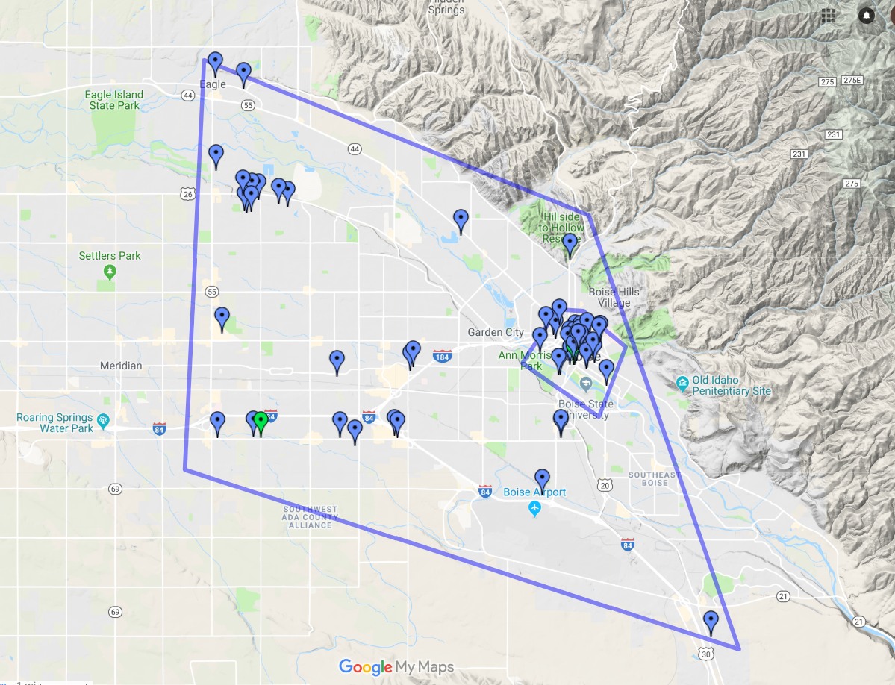

CS graduates are in great demand
- High starting salaries (among op 2 or 3 majors nationally). Last year, the salaries ranged from 60K to 80K with the average around 70K.
- Near 100% placement by graduation time.
- Most students have offers before they graduate. Many get an offer up to a year before graduation!
- About 90% of graduates remain in the Boise metro area.
- Hundreds of software and tech companies in the Boise area all need more CS graduates
- Students have been placed recently at Acquity group, Amazon, Balihoo, Boise Inc, Clearwater Analytics, Cradlepoint, First to File, Google, Healthwise, HP, Impact Sales, Keynetics, Kount, Micron, Microsoft, Tsheets, Whitecloud Acalytics and many others.
CS graduates are in high demand